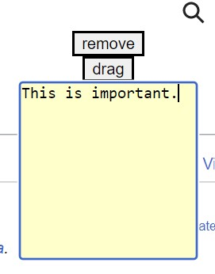
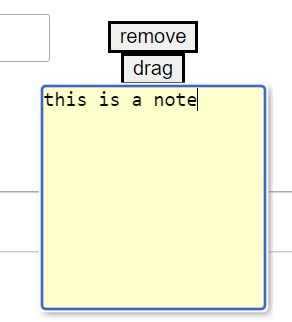
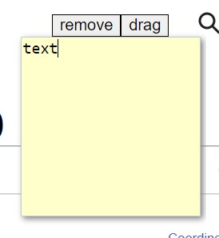
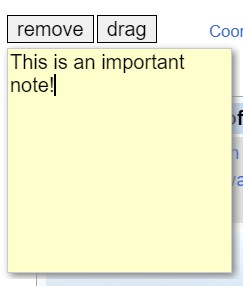

MP1 Writeup
Overview
My idea was to create an extension where you could add sticky notes to a webpage. I thought it would be helpful when reading articles to jot down important points. I based my chrome extension off of the blocker extension example so I started with that code and modified it.
The code for the extension can be found here. To use it:
- Download or clone the repo.
- Go to chrome://extensions.
- Click load unpacked.
- Click on the sticky note extension icon.
- Click the add sticky note button.

Development Process
- The first thing I did was add a textArea element. This will allow the user to input text. I made it yellow. 
- I added some styling to the sticky note. I added a shadow to the div by using the box-sahdow CSS property. 
- I removed the blue border that appears when clicked. I wanted to position the remove and drag buttons to be next to each other instead of on separate lines so I created another div to be able to position them better. 
- I changed the cursor to be a pointer when hovering over the remove button and a grabber when hovering over the drag button. Added some more styling like changing the font and positiont the buttons better. 
Issue Deep-Dive
One problem I encountered was not knowing how to get my sticky note div to stay in the spot where I dragged it to. The original blocker extension positioned the blocks to stay in the same place even when the user scrolled. I wanted my div to move with the page content so that the note would be associated with the same spot since the user would likely want to refer back to the specific part of the page. Upon reviewing the code, I realized that I didn't need the "blockContainer" div which essentially made a div to cover the entire screen and was the div that I appended the blocks to. Instead, I needed to append my blocks directly to the document body and set the positioning to be absolute which ensured it would not move as I scrolled. Through solving this problem, I learned how to better use the Google Developer console by adjusting the styling right in the browser. This will save time since I don't have to edit my code in VSCode and go through the process of refreshing.
Ideas and Future Work
There were some features that I didn't have time to add/couldn't figure out:
- Adding icons to the remove and drag buttons instead of displaying text.
- Have the sticky note always positioned at the center of the screen. Right now, when a new note is added, it always appears at the top of the page even when scrolled past.
- Have the text area be focused.
Kudos
Kudos to Hannah for helping me figure out the positioning issue! I also found this site to be helpful to refer to when specifying pointer styles